TARUMT Lost&Found is a dedicated website designed to help students report and recover lost items within the TARUMT school campus. Built with Bootstrap 5, HTML, CSS and JavaScript on the frontend, with a PHP and SQL backend managed through XAMPP.
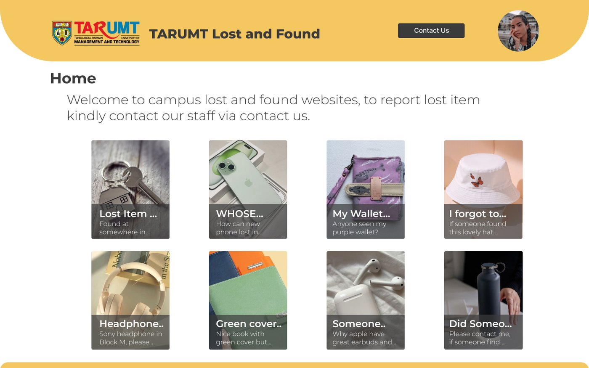
An efficient, user-friendly platform for students to track and retrieve their lost belongings, without needing to chase down staff or check noticeboards.
Users fill out the required details for a lost or found item. Once submitted, the report is sent for admin verification before it goes live.
Approved item information is posted on the website, making it visible to the whole community to view and respond to.
Verify
Every submitted report is reviewed by an admin to confirm its accuracy and authenticity before anything is published.
Approve & publish
Once confirmed, the admin approves the report and the lost or found item is posted for the whole community to see.
Support
Admins also manage inquiries and facilitate communication through social media, keeping the recovery process smooth.
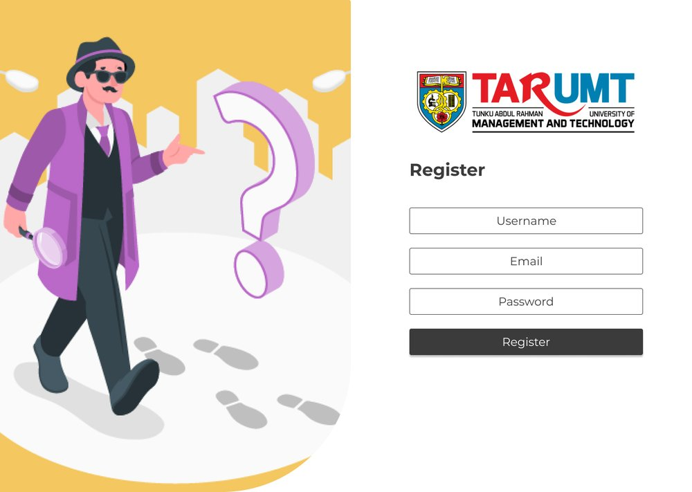
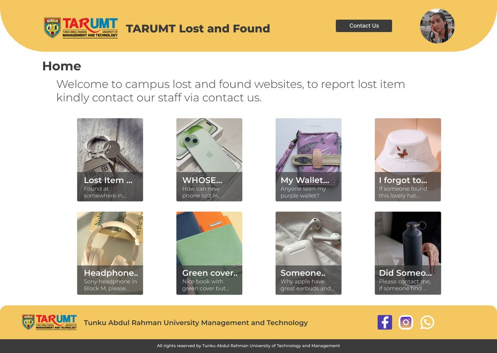
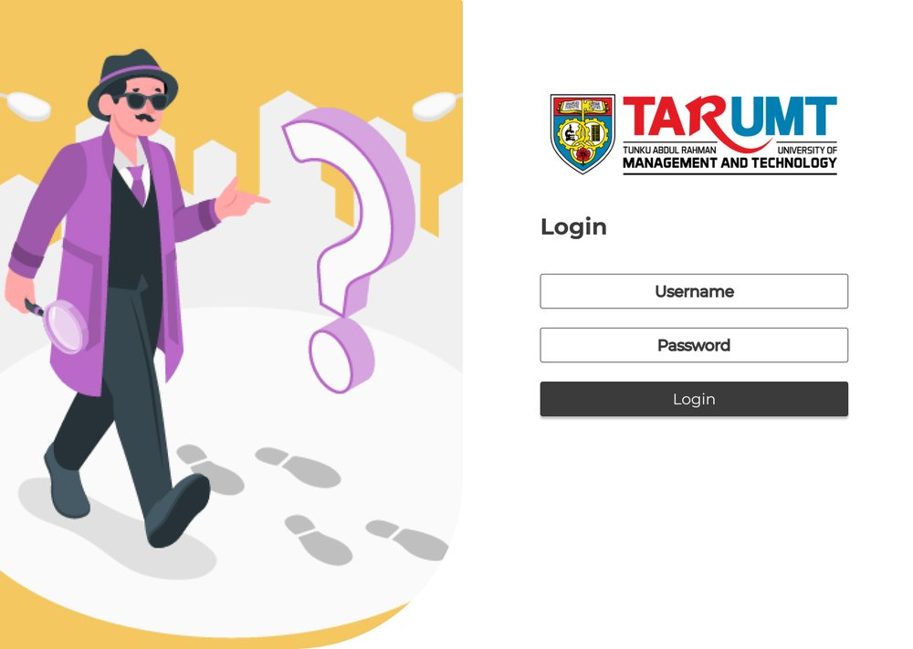
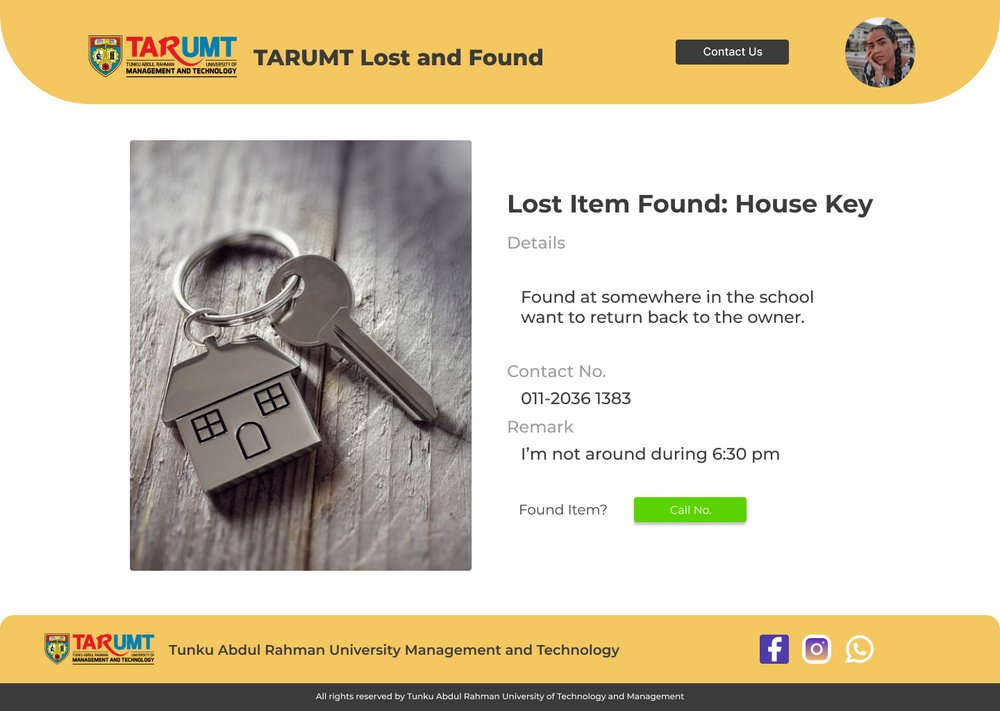
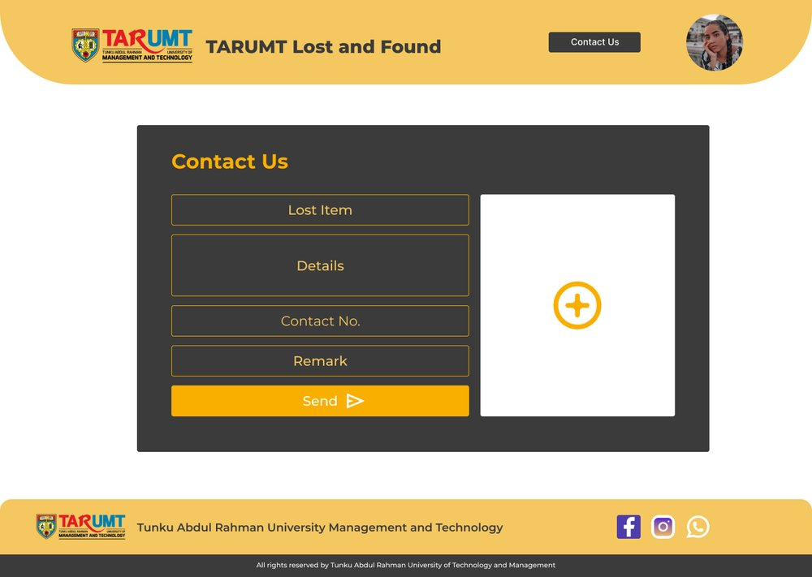
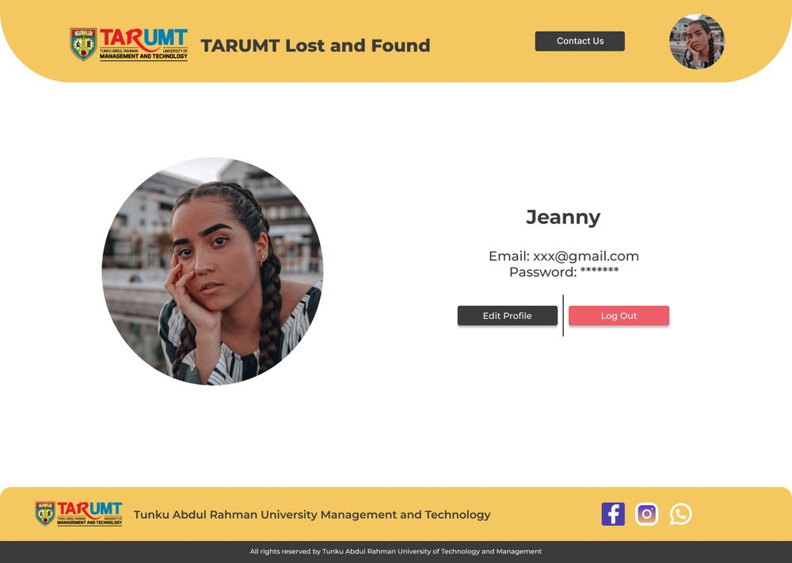
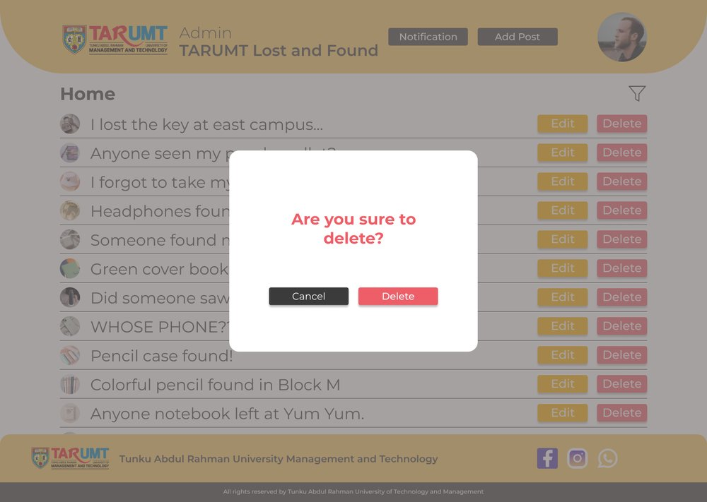
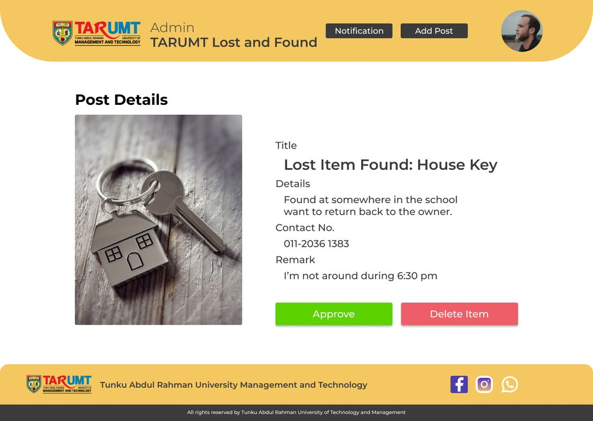
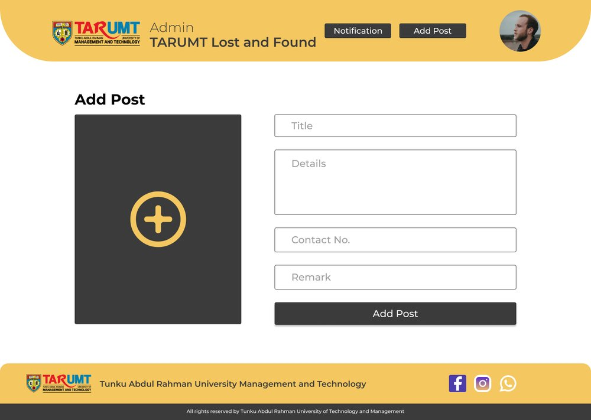
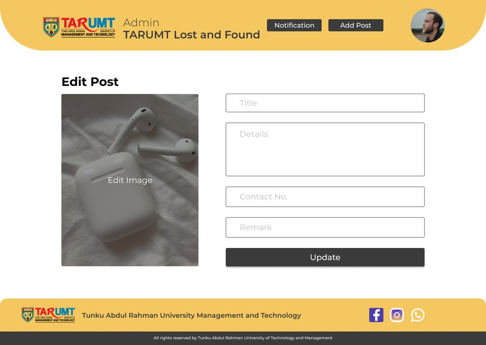
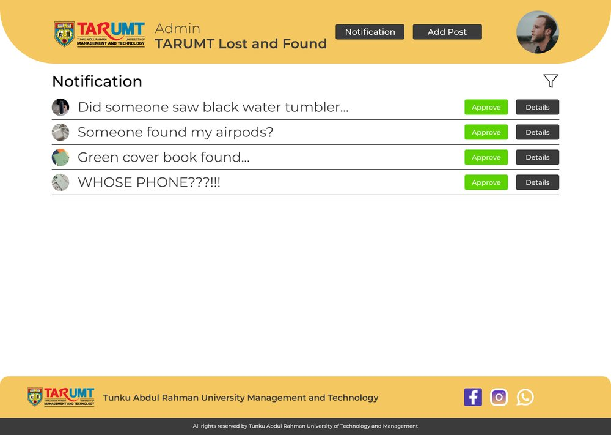
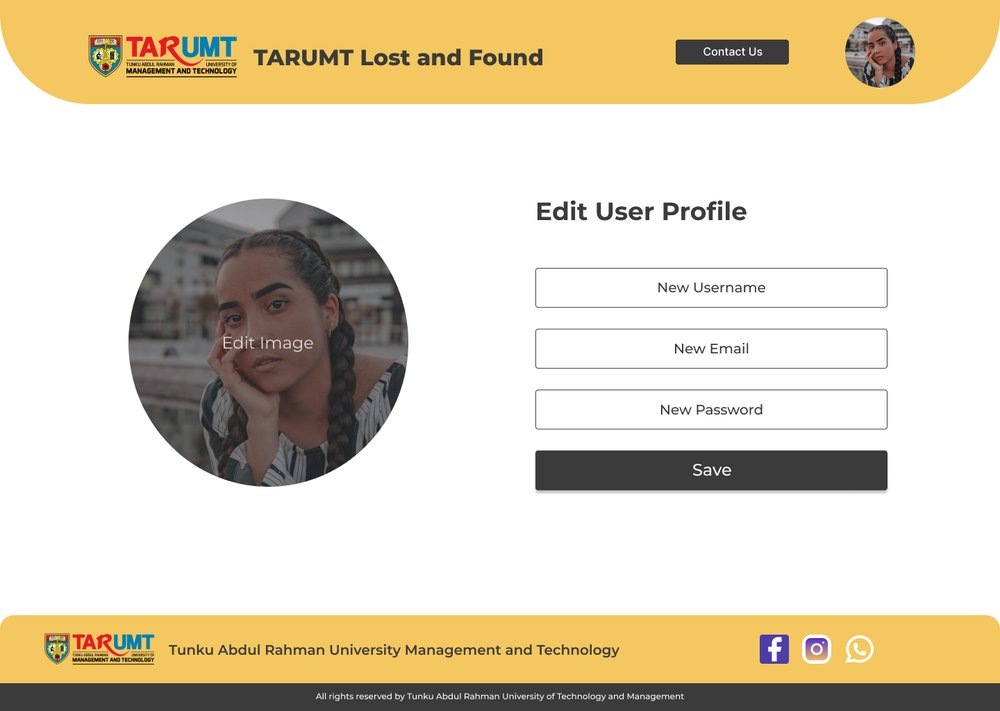